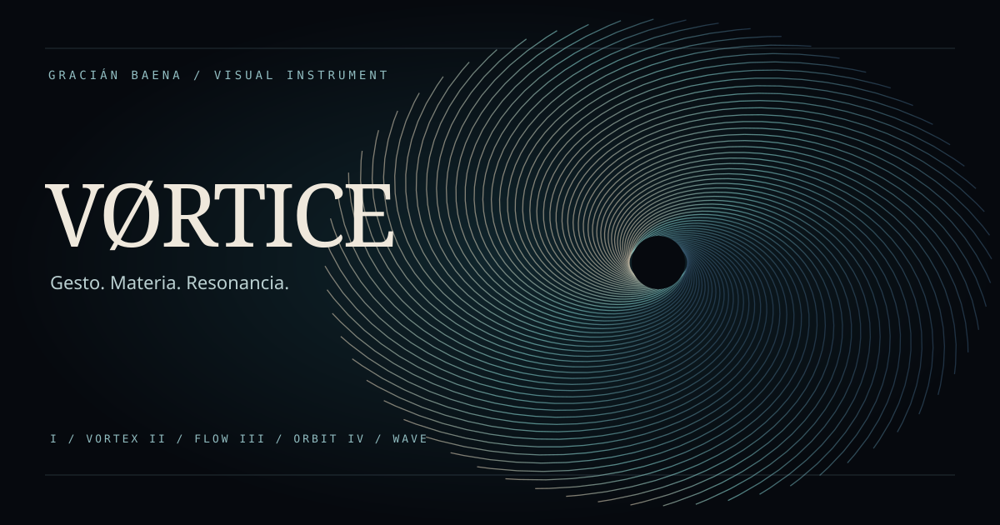
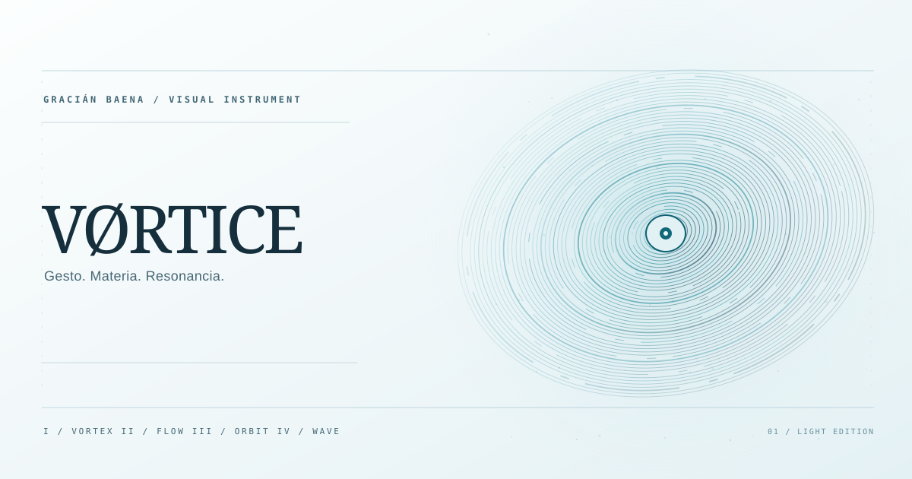

VÓRTICE / LIVE
Entra en el campo.
Activa la experiencia y mueve el cursor dentro de la ventana. Explora sus modos, cambia el ritmo y descubre cómo responde el campo.
La demo se carga al activarla. Puedes detenerla cuando quieras o abrirla en una pestaña propia.

